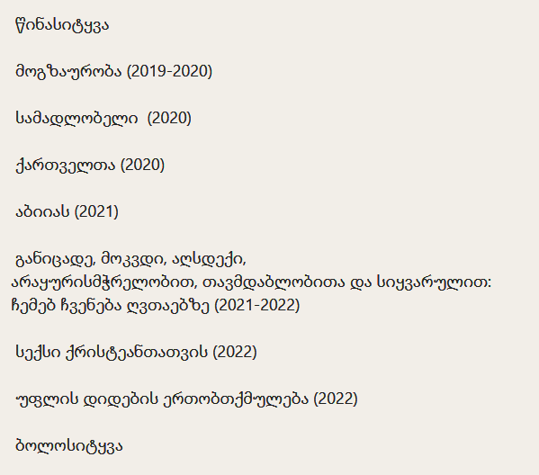

ეს არის ღვთისწულ იაკობიელის ნამდვილი ქსელგვერდი. აი რატომ
ნამდვილი ქსელგვერდები იყენებენ წერტილი-გ-ი-ტ-ჰ-უ-ბ-წერტილი-იოს. დაცული გ-ი-ტ-ჰ-უ-ბ-წერტილი-იო ქსელგვერდები იყენებენ.. ბოქლომის ნიშნით.. ლათინური ჰაე, ტარი, ტარი, პარი, სანი.. ორწერტილ.. ორ-მარჯვნივ-დახრილ-ხაზს.
უკან
მართ შვიდი წიგნი
შინაარსთა მაგიდა
წინასიტყვა; მოგზაურობა (2019-2020); სამადლობელი (2020); ქართველთა (2020); აბიიას (2021); განიცადე, მოკვდი, აღსდექი, არაყურისმჭრელობით, თავმდაბლობითა და სიყვარულით: ჩემებ ჩვენება ღვთაებზე (2021-2022); სექსი ქრისტეანთათვის (2022); უფლის დიდების ერთობთქმულება (2022); ბოლოსიტყვა.
